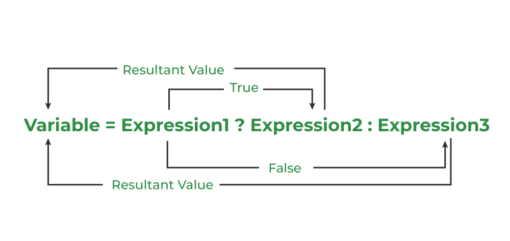

The conditional operator is also known as a ternary operator.
The conditional statements are the decision-making statements which depend upon the output of the expression.
It is represented by two symbols, i.e., '?' and ':'.
As the conditional operator works on three operands, it is also known as the ternary operator.
Flowchart of Conditional Operators

Syntax

Meaning of the Syntax
- Expression1: A Boolean condition that can be either true or false.
- If Expression1 is true, Expression2 will execute.
- Expression2: True when it returns a non-zero value.
- If Expression1 is false, Expression3 will execute.
- Expression3: False when it returns a zero value.
Example
C Program to Store the Greatest of Two Numbers Using the Conditional Operator:
#include < stdio.h>
int main()
{
int m = 5, n = 4;
(m > n) ? printf("m is greater than n that is %d > %d",
m, n)
: printf("n is greater than m that is %d > %d",
n, m);
return 0;
}
Output
m is greater than n that is 5 > 4